Sign out, a grouped row
2026-11-07. Sign out on Profile was a 44px button of its own beside 52px Account rows. Now it is a grouped row, as iOS Settings: button.row.signout, the one row of its own .rows group, so it takes the rows' surface, height and padding (--grouped-row-min, --grouped-row-pad) and their hover and pressed; the text centred in coral. The confirm alert is unchanged. Before (397236b) and after, dark and light, at 390 wide; the states from the specimen, forced by Chrome DevTools.
Sign out, at rest (specimen)
On the rows' surface, 52px.

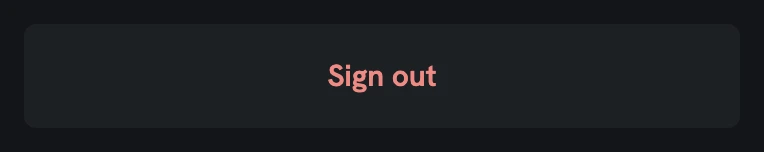
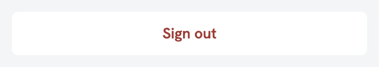
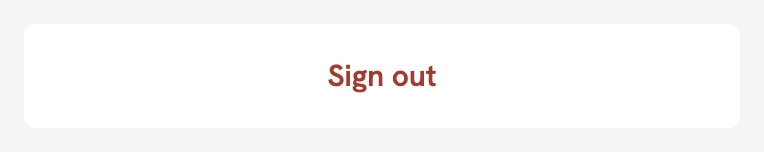
Sign out, hover (specimen)
The rows' hover: one level up from the group (--row-hover).
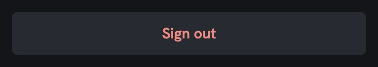
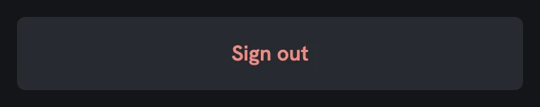

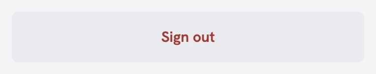
Sign out, pressed (specimen)
The rows' pressed: two levels up (--row-pressed).

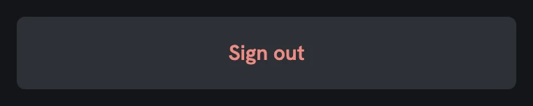
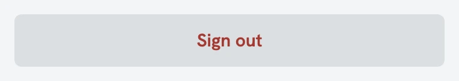
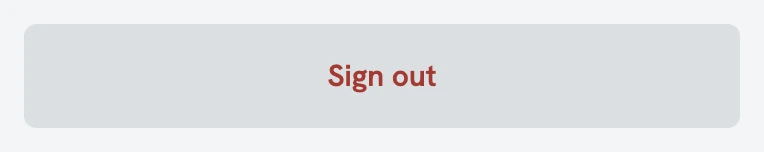
Sign out, focus (specimen)
The focus ring drawn inside the row, since the group clips its corners.
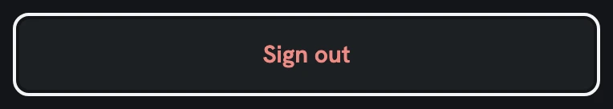
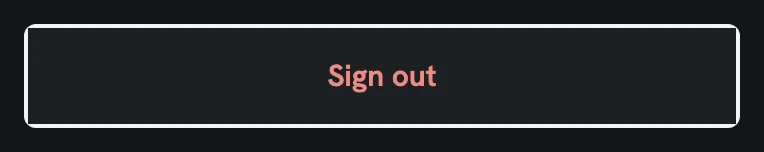
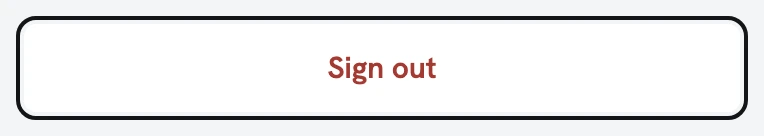
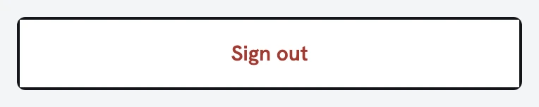
Profile
Before: a 44px button of its own. After: a grouped row in its own group, 52px with the rows' padding, the text centred in coral, as iOS Settings.

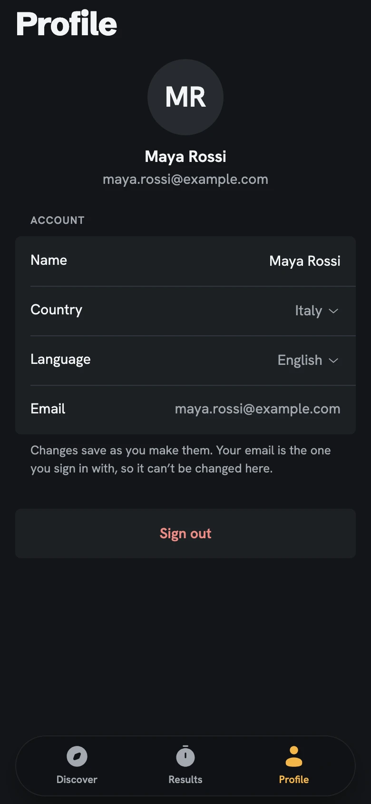
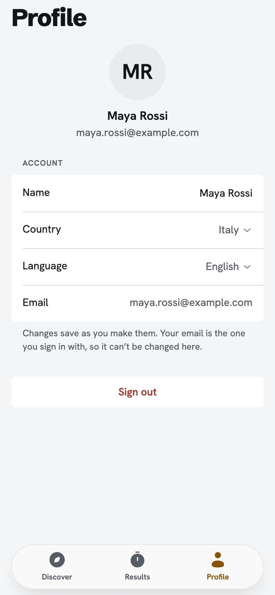
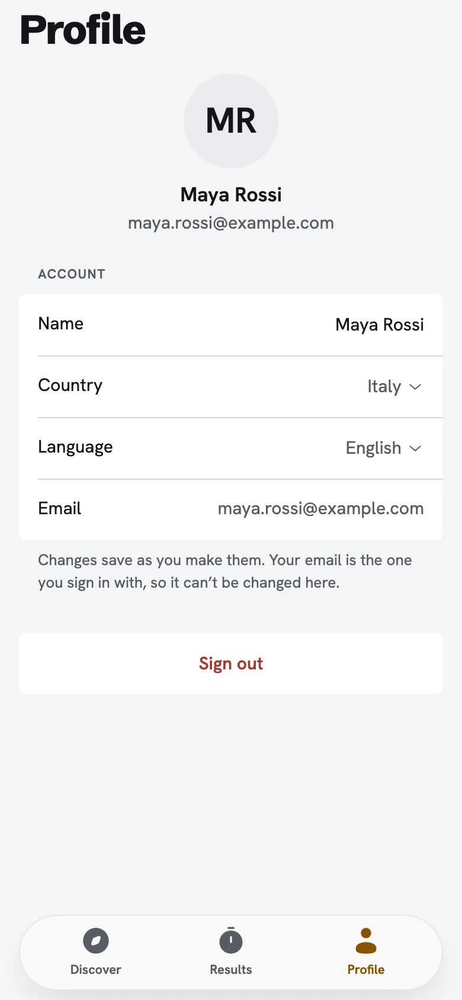
Profile, Sign out’s confirm alert
The confirm alert is unchanged; only the row under the scrim moved to 52px.
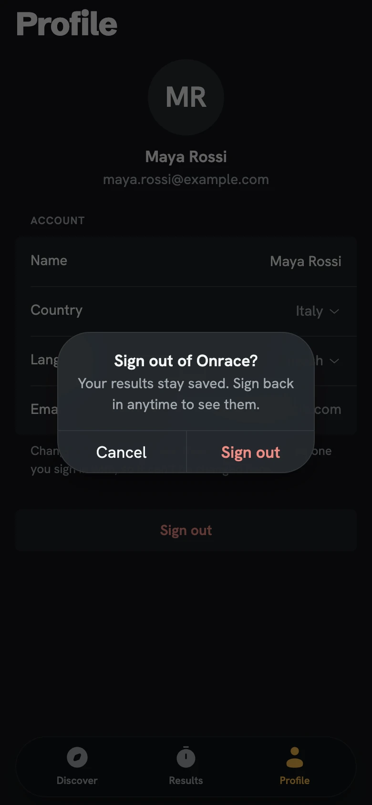
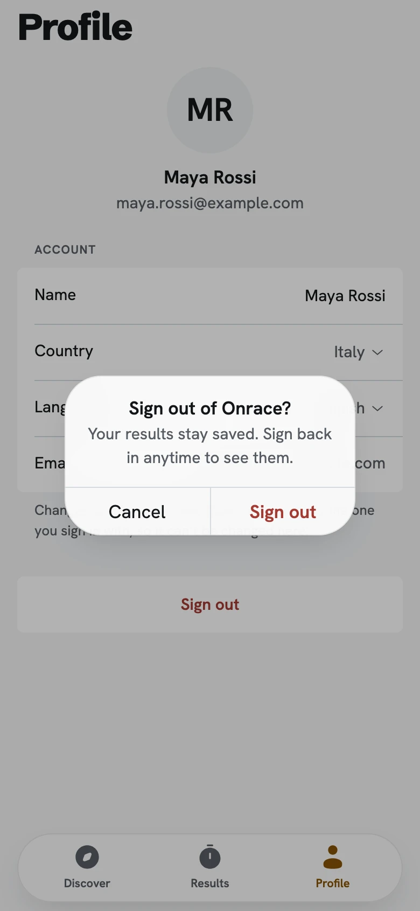
Profile -error, a row didn’t save
Sign out under the error and the footer, the same 52px row.

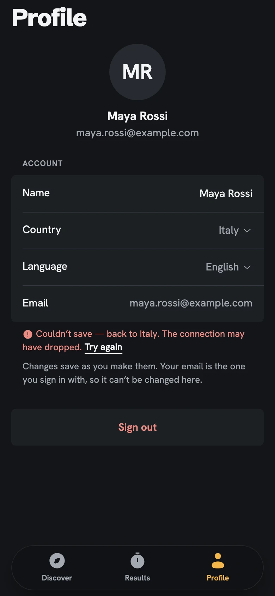

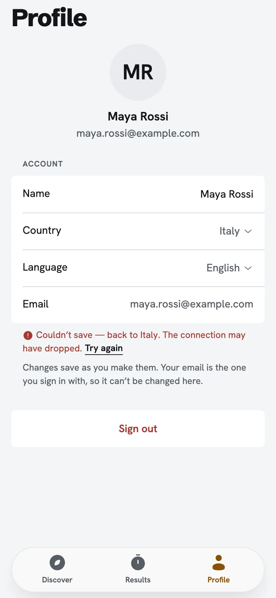
Profile -loading
The placeholder takes the row's 52px (was 44), so nothing jumps when the page arrives.
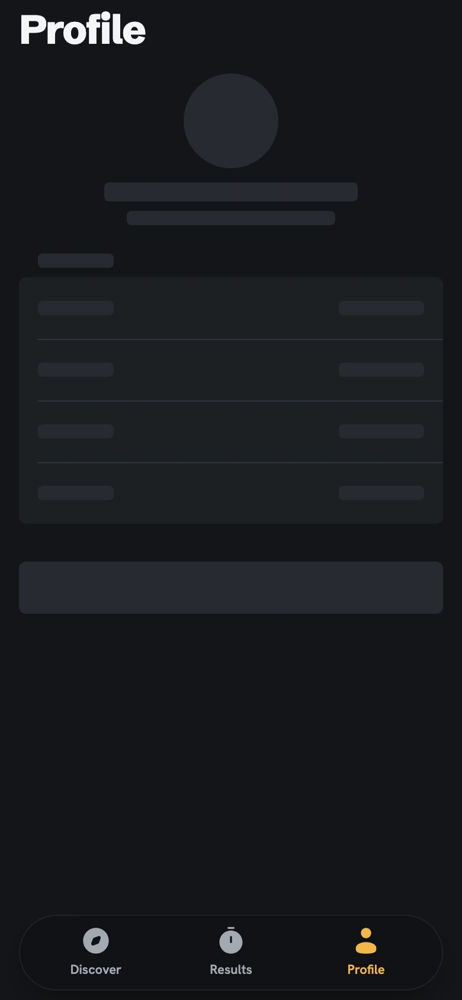
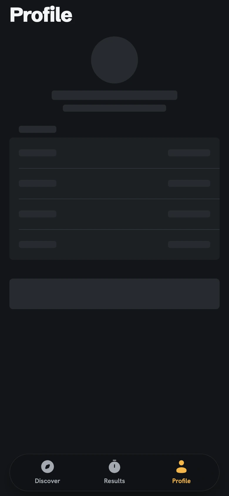

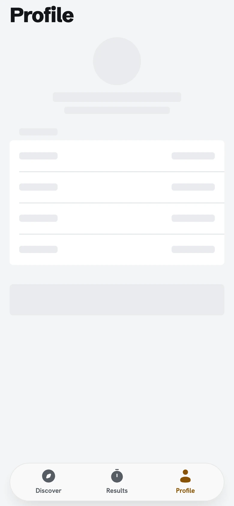